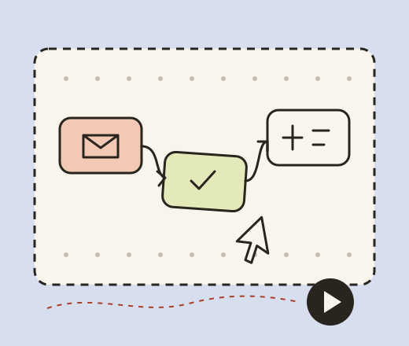

02 / THE FLOW WORKBENCH
Join the small steps.
Keep the big picture.
Choose a trigger and a rule. Add useful actions, run an event through the sequence and read the decisions before putting a process to work.
Try it here: test runs don’t touch your tools.

Then do these things.
Up to six actions per flow. A condition applies to the whole sequence. Every action remains visible in the run log, including a skipped action.